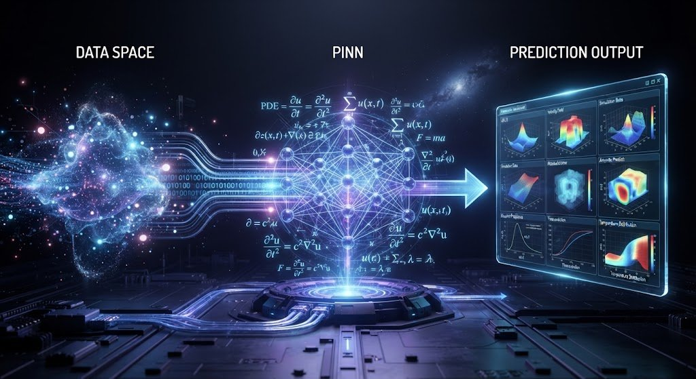
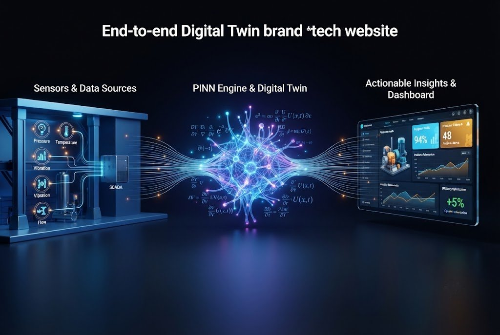
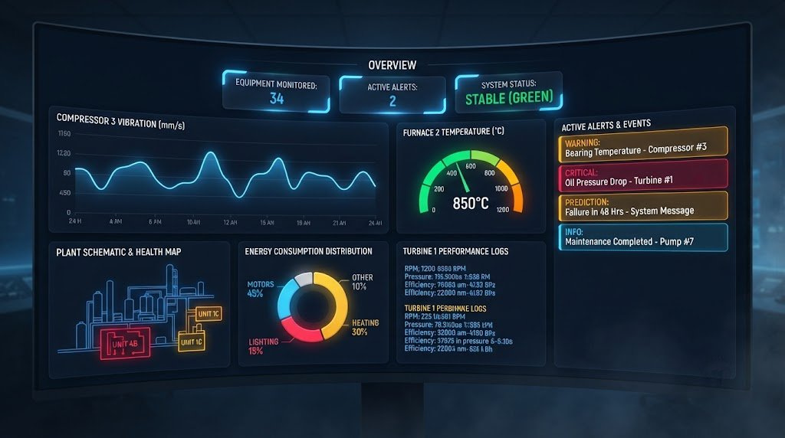

Physics-Informed Neural Networks combine the power of AI with the laws of physics — delivering accurate predictions even with limited data.
A new class of neural networks that respect the laws of physics
Traditional AI models learn only from data — they don't understand the underlying physics. If data is noisy or scarce, they fail. PINN solves this.

PINN concept: Data + Physics → Neural Network → Predictions
How data flows through our digital twin
SCADA, IoT sensors, operational data, equipment specifications
Physics-informed neural network that learns process dynamics
Predictions, alerts, optimization recommendations, dashboards

End‑to‑end architecture: from sensors to actionable insights
Comparison with traditional AI approaches
| Feature | Traditional AI | PINN (Ours) |
|---|---|---|
| Data efficiency | ✗ Requires large datasets | ✓ Works with limited data |
| Physics consistency | ✗ Can violate laws | ✓ Always respects physics |
| Interpretability | ✗ Black box | ✓ Transparent & explainable |
| Generalization | ✗ Fails with new scenarios | ✓ Robust to novel conditions |
| Deployment cost | ✗ High (needs retraining) | ✓ Low (physics keeps it grounded) |
Where our PINN digital twin is already making a difference
Predict vibration patterns, temperature anomalies, and remaining useful life of critical compressors in refineries and petrochemical plants.
Monitor and optimize furnace performance to reduce fuel consumption and extend refractory life.
Detect early signs of bearing wear, imbalance, and misalignment in turbines, pumps, and other rotating machinery.

Monitoring dashboard showing real‑time equipment health and alerts